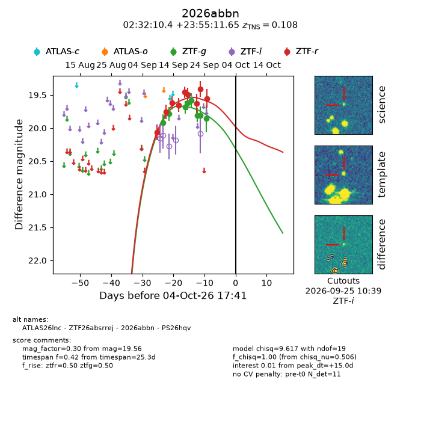
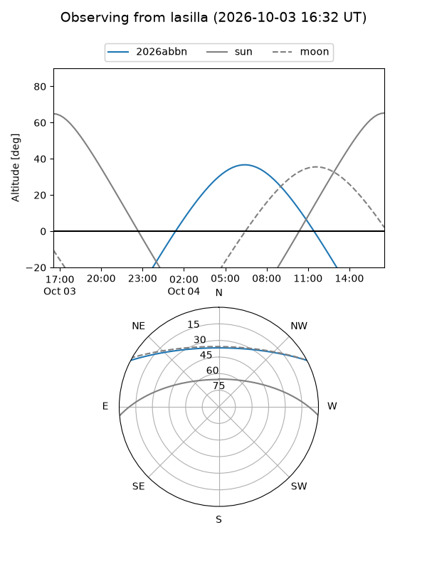
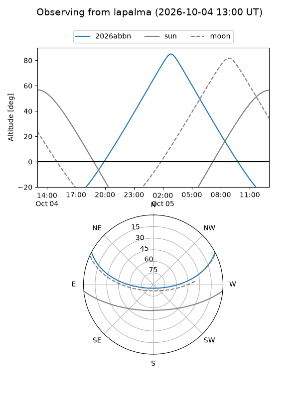
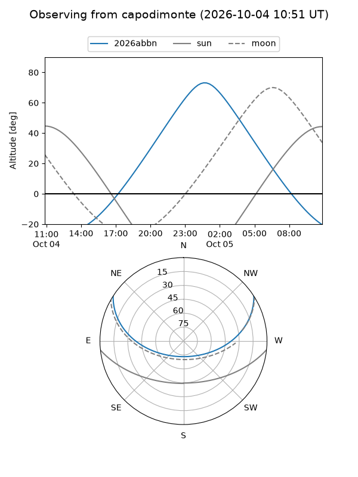
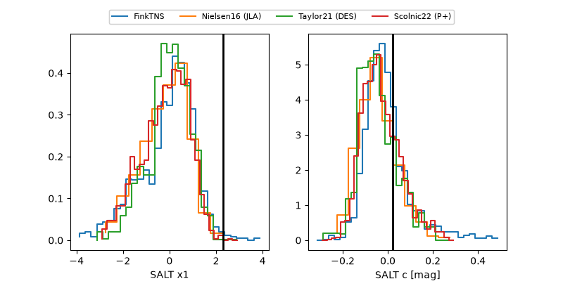

2026abbn
Target 2026abbn at 2026-10-04 17:43
Aliases and brokers:
FINK-ZTF: ztf.fink-portal.org/ZTF26absrrej
Lasair-ZTF: lasair-ztf.lsst.ac.uk/objects/ZTF26absrrej
ALeRCE-ZTF: alerce.online/object/ZTF26absrrej
YSE-PZ: ziggy.ucolick.org/yse/transient_detail/2026abbn
TNS name: wis-tns.org/object/2026abbn
Direct TNS query: direct search
alt names
ZTF26absrrej (ztf,fink_ztf)
2026abbn (tns,yse)
ATLAS26lnc (atlas)
PS26hqv (panstarrs)
Coordinates:
equatorial (ra, dec) = 38.0433,+23.91990
equatorial (HMS+DMS) = 02:32:10.39,+23:55:11.65
galactic (l, b) = (150.7225,-33.45878)
Flags:
TNS type: SN Ia
TNS redshift: 0.1080
peak dt: +15.0
Photometry:
last ztfg=19.85, ztfr=19.56
9 ztfg, 9 ztfr detections
Lightcurve

Visibility



Additional plots
